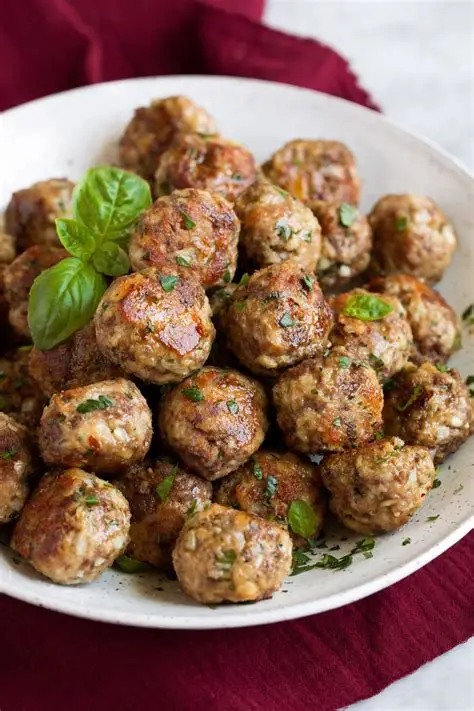
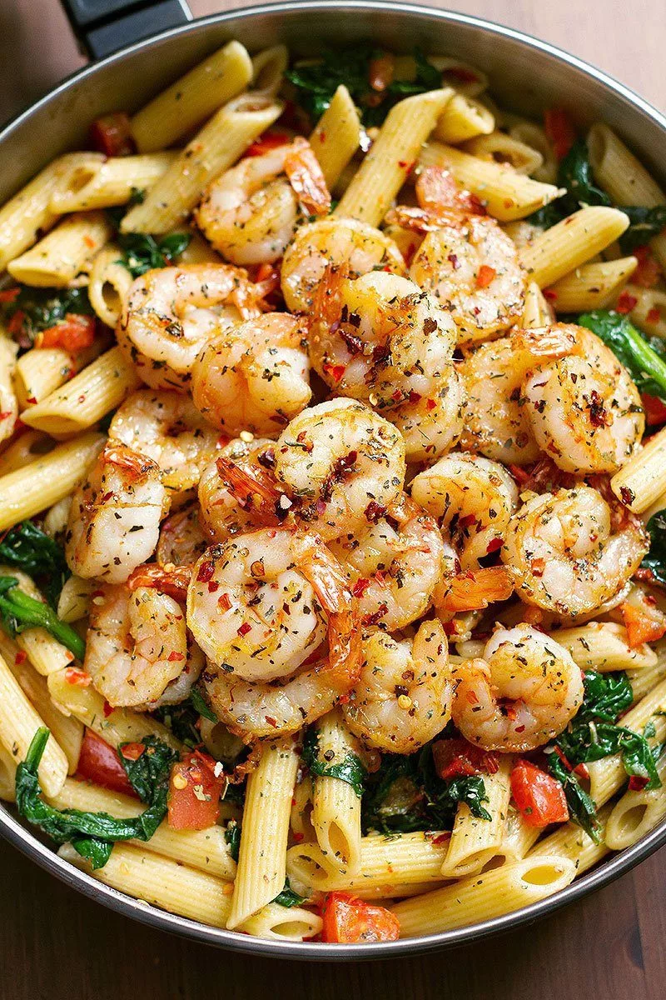

Welcome to My Food Blog
Discover delicious recipes and cooking tips!


"The chicken masala tasted really horrible with the garlic, honestly prefer it with no garlic and green peppers. All in all, all the other foods were horrible."
"Love how I was able to make the pancakes fluffy. I've been struggling for quite some time trying to figure out how to make them fluffy, glad I found your recipe. I prefer them with caramel essence too instead of vanilla, it's a game changer."
"The burger recipe was good but I think it needed a bit more seasoning. Still, the instructions were super easy to follow!"

Real food, made by real people, for real life.
Simmer started as a Saturday morning notebook, scribbled recipes from my grandmother, my travels, and my mistakes. It grew into something bigger than I expected. Every recipe here has been cooked at least a dozen times in my actual kitchen, on a Tuesday, when I was tired and hungry. No food styling tricks. No ingredients you can't find. Just honest cooking that tastes exactly like the photos.
Read my story